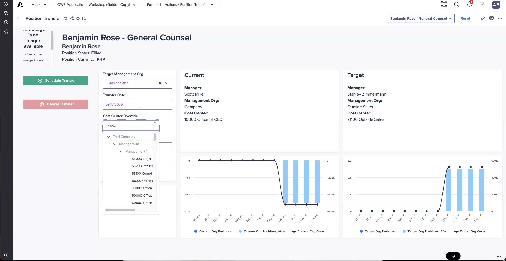

Lab: Transfer a Position
Move a position to a new org on a schedule
These steps follow what was shown in the workshop demo. Exact page names, button labels, and values vary by release and by your training tenant — treat the steps as a guide and confirm as you go. The Check my work button records your attempt; automated validation against Anaplan is not wired up yet.
What you'll do
- Open Position Transfer for Benjamin Rose in your Continuous Position Plan (CPP)
- Set the target management org and read the Current vs Target panels
- Set a transfer date and apply a cost-center override
- Enter a reason and schedule the transfer
- See when the move actually executes, and why transfers need no approval step
1 — Open Position Transfer for Benjamin Rose
Benjamin Rose currently sits at company level. You'll move his position to another org on a set date and watch the impact on both source and destination.
In your tenant, find Benjamin Rose in the CPP and start Plan actions → Position Transfer.
The transfer screen shows Current and Target panels side by side, plus before/after charts.
- Locate Benjamin Rose's position and open Position Transfer from Plan actions.
- Read the Current panel — note where the position sits today and the source org's total positions.
- Keep an eye on the before/after charts; they update as you fill in the target.

Position Transfer for Benjamin Rose: target management org, transfer date, cost-center override, and the Current vs Target panels with before/after charts.
2 — Set the target org, date, and cost-center override
Fill in the target management org and the date, then use the cost-center override to align cost independently of the org's default mapping.
In your tenant, set the target management org and transfer date, then apply a cost-center override.
In the demo the cost aligned to "Field Sales EMEA" instead of the default "outside sales" cost center.
- Set the target management org — the destination the position moves to. Watch the Target panel and the destination org's total positions update.
- Set a transfer date. Transfers are scheduled at the month level, not day level.
- Apply a cost-center override: align the cost to a different cost center — the demo used Field Sales EMEA in place of the default outside sales. This deliberately breaks the one-to-one org ↔ cost-center mapping.
The default is a one-to-one mapping between an org and its cost center. The override is a customer enhancement that lets a position report cost against a different cost center than its org's default — useful when finance groups cost differently from the supervisory org.
Does a position transfer need to go through an approval step before it takes effect?
3 — Enter a reason and schedule the transfer
Record why the move is happening, then schedule it. The position doesn't move immediately — it moves when the model rolls to the transfer month.
In your tenant, enter a reason and click Schedule Transfer.
Confirm the Target panel and before/after charts reflect the move you set up.
- Enter a reason for the transfer so the change is traceable.
- Review the Current vs Target panels one more time — confirm the destination org and the overridden cost center are correct.
- Click Schedule Transfer. When the model rolls to the transfer month, the position moves and actuals align as HCM data arrives.
Transfers are one at a time — there is no mass transfer yet (a future enhancement). There is no approval process on transfers, and they are scheduled at the month level, not day level.
You clicked Schedule Transfer with a future date. When does the position actually move?
When you've opened Benjamin Rose's Position Transfer, set the target org and date, applied the cost-center override, entered a reason, and scheduled the transfer, click below to verify.
Position transfer scheduled.
- Position Transfer opened → started for Benjamin Rose from Plan actions, Current panel read
- Target management org set → destination chosen, Target panel and org totals updated
- Transfer date set → at the month level, not day level
- Cost-center override applied → cost aligned to a different cost center (e.g. Field Sales EMEA) than the org default
- Reason entered and scheduled → Schedule Transfer clicked; the move executes when the model rolls to the transfer month
Next up: transfer a worker into an open position.
Debrief Questions
- You applied a cost-center override so Benjamin Rose's position reports cost to a different cost center than its org's default. Why would a customer want this, and what does it do to the usual one-to-one org ↔ cost-center mapping?
- The transfer has no approval step and executes when the model rolls to the transfer month. How would you explain that timing to a manager who expects the move to show up the day they scheduled it?
- Transfers are one at a time — there is no mass transfer yet. How would you set expectations with a customer who wants to reorganize dozens of positions at once?
- What if you must transfer a position to an org you don't have access to? Walk through the options — modifying access versus having a higher-access user do it — and why an approval path would be the cleaner long-term answer.